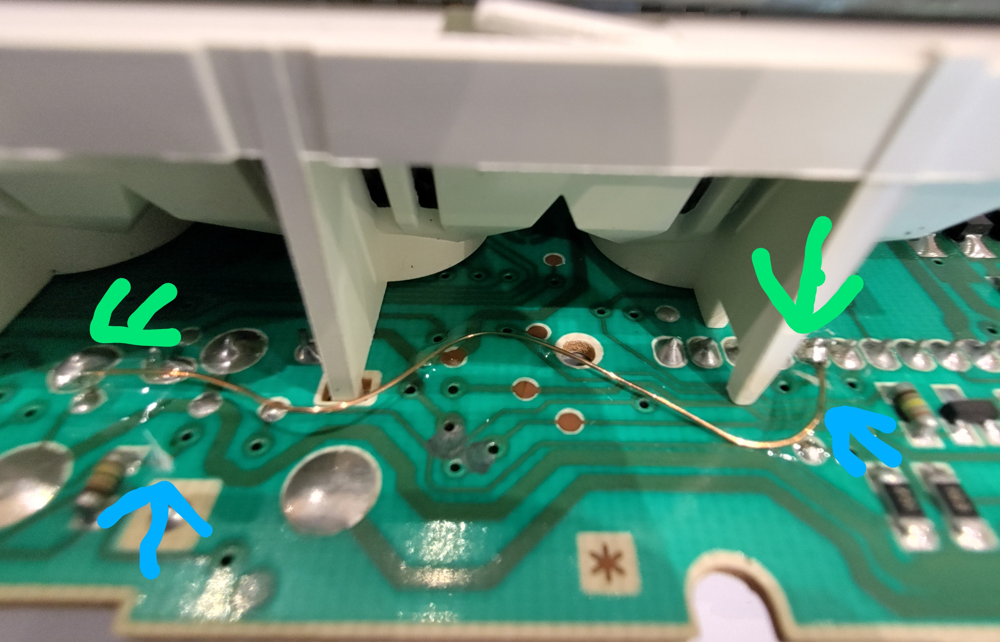
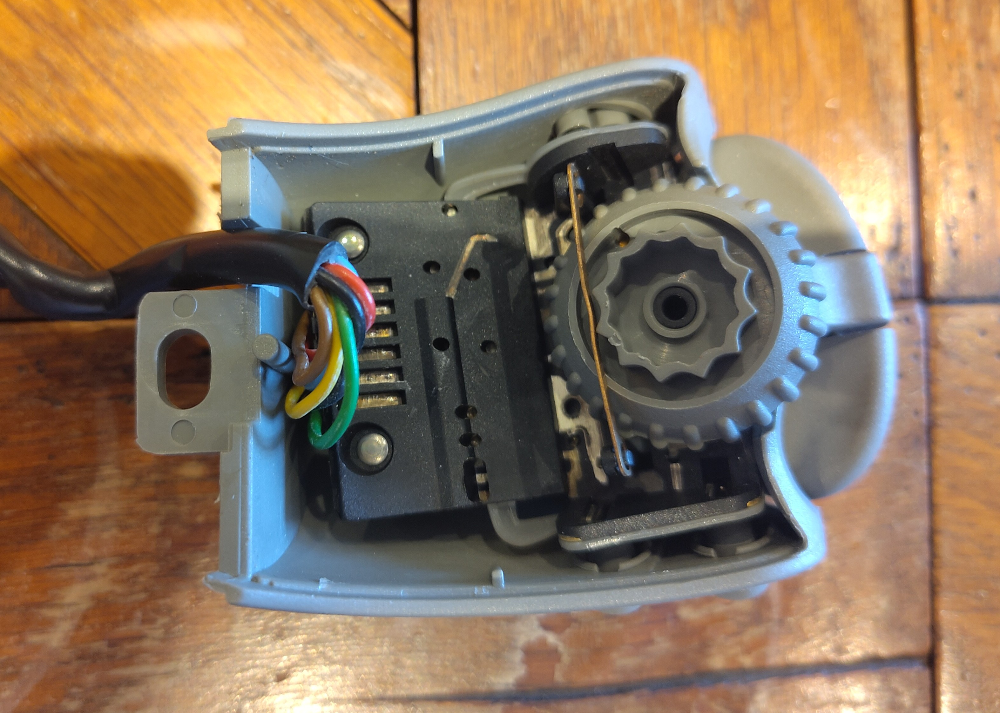
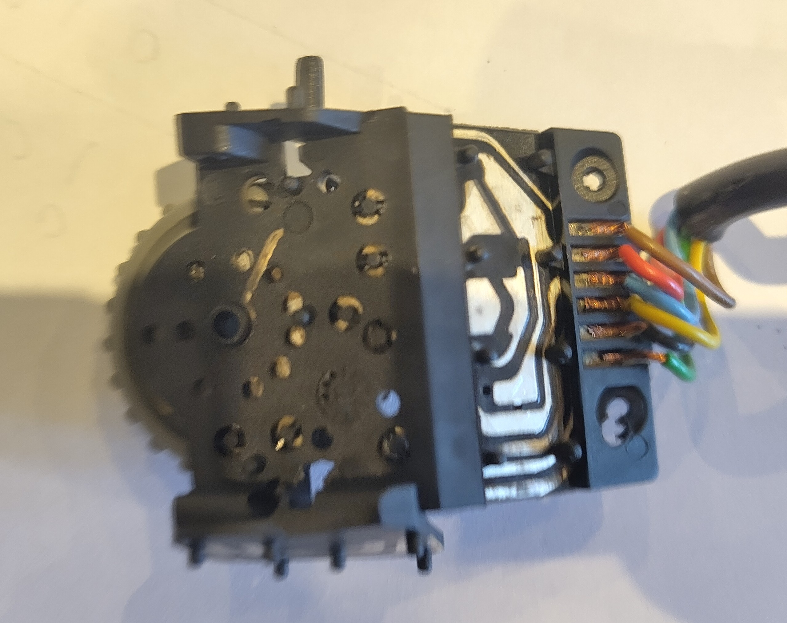
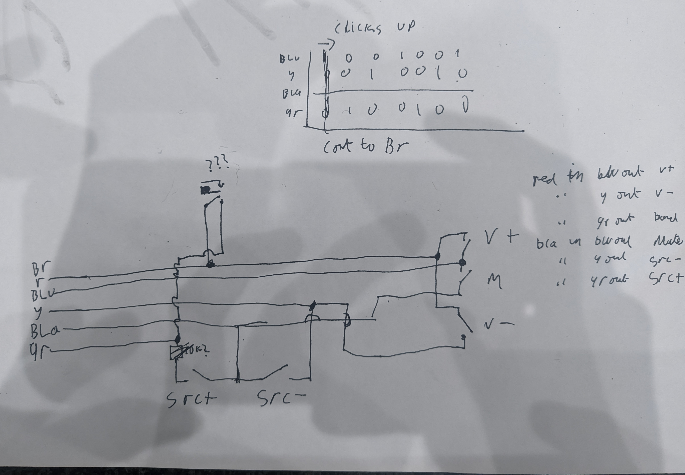
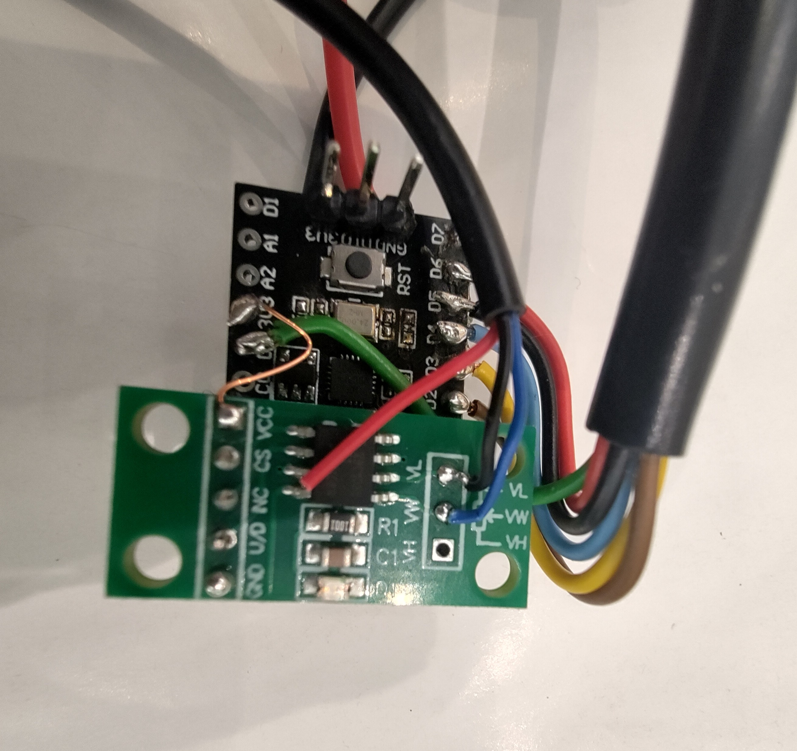

Decoding the Renault Twingo MK1 Steering Controls
DATE
I'm planning on doing the Twing Raid 2026 with a friend next year, and so we're turning a little innocent Renault Twingo into a mean desert bashing machine. Given it's going to be a 2 week long adventure across 5000km it's important the cars actually nice and comfortable to be in, so we're fixing things like the air conditioning, and giving it a fancy stereo system to bang out the tunes as we traverse a total of four countries.
Fuel gauge issues and repair
The Twingo we found was a high spec one with electric mirrors, comfy seats (that sit too high up for my 6 foot frame and will need to be replaced) and steering wheel controls. However, a lot of things just weren't working right, the AC clutch didn't engage, which turned out to be a dodgy connection under the relay box, and the fuel gauge wasn't working, and after spending 170 pounds on a new pump and sender assembly it turned out that there was moisture damage in the cluster pcb. The Renault Dialogys software doesn't have much information on the wiring of the C066 twingo, and what info it does have is pretty hard to parse, but it's still better than the Haynes AutoFix service which was a complete waste of effort and money, having absolutely no useful information on it at all.
The fuel gauge signal is a simple resistance measurement, and the wires from it go directly to the instrument cluster, if your fuel gauge is broken, with a flashing orange light and showing no value, pull the cluster out, remove the torx screws and check on the PCB for black sludge, if it's present you can run a wire to bypass the broken ground trace (run it between the points highlighted in greenn), then cut the ground trace at both ends (highlighted in blue).

Steering wheel controls pinout and scheme
The steering wheel controls aren't really on the steering wheel, they're on a self contained little thingy that sits behind the wheel. There's 6 buttons and a rotary encoder. When I put the new head unit in I stuck a multimeter on some of the wires whilst pushing the buttons and didn't see anything, so I didn't think it was a simple switch or resistor ladder like is common on automotive switches (You can do open and short diagnosis as well as run more buttons over fewer wires with a resistor ladder). There's 6 wires coming out the unit, a pair of which are red and black, so I assumed there there was some smarts in the little controller. After removing the unit from the car and opening it up it was a very odd PCB and it was riveted in place, so I didn't want to go screwing around inside too much

The PCB didn't look like it has smarts though, so I continued under the assumption it was a resistive ladder and tried to trace things out but the results i got were weird, I managed to get signals out of two of the buttons on the connector, but their resistance was all over the place. I tried the fancy carbide tips on my multimeter probes thinking i wasn't getting a good contact on the bits I was probing but the issues persisted, so i went and removed the rivets forcefully.

After removing it from it's shell I could see that it's actually way simpler than I thought, it's literlly just some metal tracks with membrane buttons, my best guess for why it wasn't working was corrosion. A bit of deoxit on the metal and rubbing the membrane buttons along a piece of paper and the contacts were working great again, so I could progress to decoding the pinout and connections. This was just an exercise in probing and checking, and I ended up with this full pinout for the steering controls. Some googling indicates this controls unit has been used on a lot of Renaults, so this pinout is probably applicable for most cars with these controls.

It's a fairly simple 2x3 button matrix, no anti ghosting diodes or anything like that, it doesn't really need it. The encoder is also fairly simple, it has three connections shared with the switches and one common connection dedicated to the encoder, and at any detent it's making one of the 3 connections between the common and one of the switch wires, so you jsut track the previous state and see which one it moved to to determine the ditection it's rotating in.
Wiring to the Sony DSX-A410BT
The new stereo I installed was the Sony DSX-A410BT. I didn't have any strong criteria, it needed Bluetooth audio, to be of a decent quality and to be cheap on eBay. I scored an open box one for about 20 quid, a screaming deal. It uses a 3.5mm 3 pole jack for the steering wheel remote connection, and it has two analog input channels to read the buttons. It wasn't the easiest thing in the world to find thepinout for sony stereo remote controls. The base of the 3.5mm jack is ground and the terminals at the tip and middle are the resistance channels. It's clearly intended for resistor ladder setups. To read the buttons I'm using one of the MuseLab nanoCH32V003 boards, and to emulate the resistor ladder I'm using a little digital potentiometer. Powering the whole lot is a cheap ebay buck converter running off the ignition on circuit. There's already a wiring adapter to adapt the Renult ISO wiring to the stereo wiring so power can be tapped from there. After getting the whole unit assembled I gooped it up with tiger seal to protect all the joints and wires from vibration.

The code for this setup is fairly simple, the buttons get sampled by toggling the column pins high and measuring the row pins, then the encoder is sampled and the digital potentiometer gets set based on that. On the stereo side of things the custom learn function is used to configure the stereo. The X9C103 digital potentiometer is a fairly simple device, it just counts input pulses to set the resistance, so you need to keep track of the current resistance setting. An I2C potentiometer might have been a better fit, but those weren't available with eBay fast and free delivery.
After getting the encoder configured in the code I started having issues with the buttons, my first thought was broken wires in the cable connecting the controls to the ch32 board, but it ended up being the encoder signal pulling down the row pins for the key matrix. This was fixed by configuring the encoder drive pin as floating after every encoder read. The encoder pulses get turned into short button presses, as the stereo doesn't have the ability to interpret encoders by default. The stereo has some sort of built in debouncing, which didn't present an issue for the buttons, but the short pulses for encoder channels were too short, so I added an additional 50ms delay to encoder pulses and it worked fine after that.